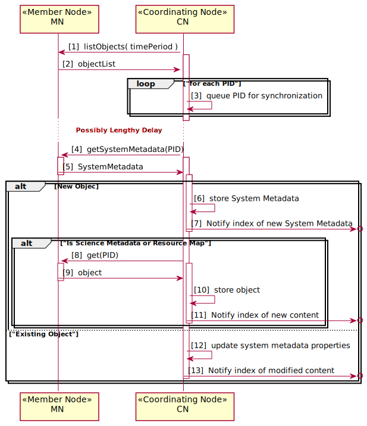
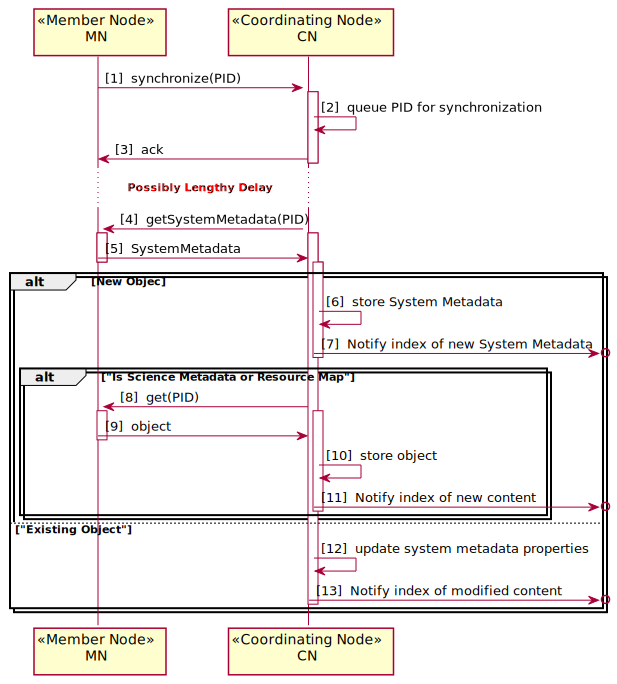
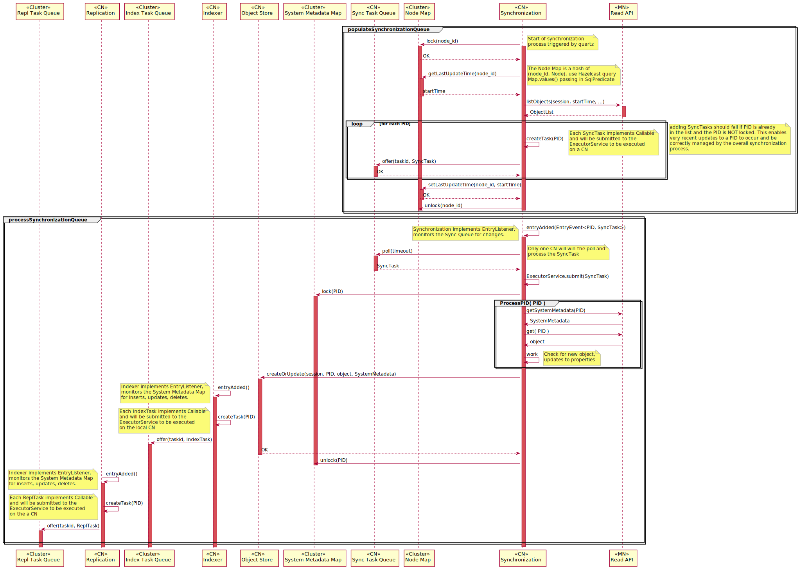
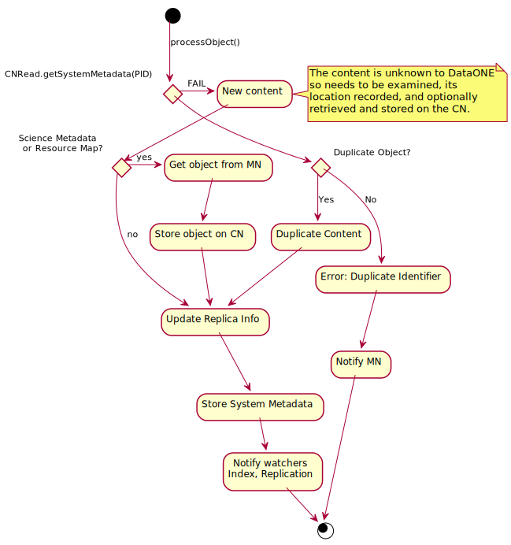

Use Case 06 - MN Synchronize¶
Goal¶
Science metadata records, resource maps, and system metadata for all objects available on a Member Node are synchronized to a Coordinating Node.
Summary¶
As content is added to Member Nodes, the associated system metadata, science metadata, and resource map documents are retrieved by a Coordinating Node. Once the objects are registered with the Coordinating Node, they are considered to be part of the DataONE system, and so will be managed accordingly - the metadata and resource map object will be replicated between Coordinating Nodes, metadata will be indexed, and the objects will be replicated to other Member Nodes as required.
Content replication as managed by Coordinating Nodes is described in Use Case 09.
In version 1.x of the DataONE infrastructure, synchronization is through polling only. A Coordinating Node will periodically request a list of objects that are new or have been altered for some specified time period using the listObjects method.
In version 2.x of the DataONE infrastructure, a new mechanism to enable clients or Member Nodes to request synchronization of an object was added. This helps ensure a more rapid update of object properties such as access control rules are propogated through the infrastructure.
Actors¶
Member Node
Coordinating Node
Figure 1. Use case diagram indicating the components and other use cases involved in this use case.
Preconditions¶
CN and MN operational
New content available on a Member Node.
Triggers¶
Periodic polling of MNs
Signal to CN issued by a MN that is requesting synchronization
Post Conditions¶
All System Metadata, science metadata, and resoruce map documents from a MN are also present on the CN
Update to the search index is triggered (Use Case 43)
Implementation Overview¶
Figure 2. Overview of synchronization process using a polling process to periodically request information about objects that have changed within a time period.
Figure 3. Overview of synchronization process with an external request to synchronize an object rather than relying on periodic polling. Note this is a Version 2.x feature.
Implementation Details¶
Figure 4. Sequence diagram for use case 06. Synchronize content between Member and Coordinating Node. Detail for the processObject() step provided in the activity diagram below.
Figure 5. Activity diagram indicating the execution flow after attempting to retrieve the system metadata for the object from the CN.
Implementation¶
The Member Node synchronization process will operate in an asynchronous manner, with a task queue on the CN service containing a list of objects that need to be added to the coordinating node populated through two mechanisms:
scheduled calls to
MNRead.listObjects()through a new notification API that is called by a Member Node after a successful create operation.
The task queue is processed by a pool of workers which retrieve the content
using MNRead.get() and MNRead.getSystemMetadata(), and store the
content in the Coordinating Node using the internal CNStorage.create()
method.
The initial implementation will focus on using only scheduled calls to
MNRead.listObjects() to populate the task queue. The scheduling
information shall be set during the MN registration process.
Multiple threads should be able to process the task queue, and the number of threads should be adjustable by an administrator. The total number of threads hitting on a particular MN should be limited, the limit should be specified in the MN capabilities recorded during the registration process.
The tasks queue will need to be thread safe. In the future it may be feasible
to use a distributed queue (based on Apache MQ or Zookeeper for example;
shared across the CNs) so that processes on any CN can issue the
MN_get() and MN_getSystemMetadata() requests.
There will likely be a significant load on the system for indexing as new content is being added - this is the case for both Mercury and Metacat. Options for disabling indexing for bulk load should be considered.
The synchronization process will certainly be more sophisticated down the road, but for now (i.e. prototype implementation) simplicity should be a priority:
MNs are only scanned by the CN where they are registered (restriction to be dropped down the road).
listObjects is polled (with max objects set to some limit), with results stored in a queue on the CN
as the queue is processed and shrinks to some size, then listObjects process is polled again
the queue is processed by n worker threads, with each task being to pop an entry from the queue, pull the content from the target, and store it in the object store.
when there is some number of new entries in the object store, then the mercury indexing process needs to kick in. Ideally this should be updating rather than re-creating the index at each pass. This may be initiated by a cron job for the prototype implementation.
This fairly simplistic approach should be enough to get things started. Not ideal, but should suffice to get some data moving around. To implement, there is need for a few new components - a queue, a place to store state information, the code that does the polling, the code that does the object retrieval, the worker thread code, and an overall controller service.
In more detail¶
Retrieve objects from Member Nodes. getNextMemberNode() gets the next Member
Node to work on - this could be serial selection from the list of registered
MNs, could be based on the last update, perhaps from some hint returned in
MN_health.ping().
New structures:
MemberNodeState
String url; //URL of the member node
DateTime lastCheckTime; // time stamp for when the MN was last polled for listOjects
RetrievalTask
String url;
ObjectInfo objectInfo;
Populating the harvest task queue pseudo code:
void populateTaskQueue ()
{
ThreadSafeQueue taskQueue = getSharedTaskQueue()
while ( keepRunning() )
{
if (taskQueue.length < MIN_TASKS)
{
MemberNodeState = getNextMemberNode();
// This could be executed in a different thread, which would
// enable multiple MNs to be polled at a tme if necessary
int numNewEntries = loadMNTasks(taskQueue, mnState);
}
}
}
Processing the harvest task queue pseudo code:
int loadMNTasks(ThreadSafeQueue taskQueue, MemberNodeState mnState)
{
AuthToken token = getSystemToken();
D1cient client = D1Client( mnState.url );
// get a list of all the new entries since lastCheckTime
DateTime tstamp = now();
// Will actually need to loop here to page through results
ObjectList objectList = client.listObjects(token, mnState.lastCheckTime);
for (ObjectInfo objinfo : objectList)
{
RetrievalTask task = RetrievalTask(mnState.url, objinfo)
taskQueue.push(task)
}
mnState.lastCheckTime = tstamp;
setMemberNodeState(mnState);
return objectList.length;
}
Worker threads are responsible for retrieving each object listed in the taskQueue. The number of workers should be adjustable. An obvious target for improving efficiency is to enable requesting multiple objects in a single call to a MN (later enhancement):
// object is the next entry from the taskQueue
bool retrieveObject(String mnurl, ObjectInfo object)
{
Authtoken token = getSystemToken();
D1Client client = D1Client(mnurl);
SystemMetadata sysmeta = client.getSystemMetadata( object.identifier );
if ( isScienceMetadata(sysmeta.objectClass) )
{
scimeta = client.get( object.identifier );
CN_SERVICE.create( object.identifier, sysmeta, scimeta );
}
else
{
CN_SERVICE.create( object.identifier, sysmeta );
}
}